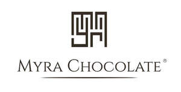

Trade Mark Journal No.2025/045 7 November 2025
UK00004282058 22 October 2025 (30,35,39,43)

- Class 30
- Coffee, tea, cocoa, sugar, rice, tapioca, sago, coffee substitutes; flour and preparations made from cereals, bread, biscuits, cakes, pastry and confectionery; honey, molasses; yeast, baking powder; salt, mustard; pepper, vinegar, sauces; spices; ice, Chocolate; chocolate sauces; chocolate sauce; drinking chocolate; chocolate beverages; chocolate coffee; chocolate extracts; chocolate syrup; hot chocolate; chocolate powder; chocolate flavourings; imitation chocolate; chocolate flavoured beverages; chocolate based drinks; drinks containing chocolate; beverages containing chocolate; chocolate drink preparations; drinks flavoured with chocolate; drinks prepared from chocolate; beverages based on chocolate; beverages made from chocolate; beverages made with chocolate; drinks based on chocolate; chocolate beverages containing milk; chocolate flavoured beverage making preparations; beverages with a chocolate base; beverages consisting principally of chocolate; chocolate drink preparations flavoured with orange; chocolate drink preparations flavoured with mint; chocolate drink preparations flavoured with nuts; chocolate drink preparations flavoured with chilli; chocolate drink preparations flavoured with infusions; chocolate drink preparations flavoured with mocha; cocoa; cocoa products; cocoa preparations; cocoa beverages; cocoa mixes; cocoa-based beverages; drinks based on cocoa; beverages made from cocoa; drinks prepared from cocoa; coffee; tea; artificial coffee; ice cream; marshmallows; chocolate kits for drink making.
- Class 35
- The bringing together, for the benefit of others, of a variety of goods, namely: chocolate, confectionery, cakes, drinking chocolate, tea, coffee, powdered preparations containing cocoa for use in making beverages, enabling customers to conveniently view and purchase those goods from a retail store, from a catalogue by mail order, or by means of telecommunication, or from an Internet website.
- Class 39
- Delivery of chocolate, confectionery, cakes, drinking chocolate, tea, coffee, and powdered preparations containing cocoa for use in making beverages.
- Class 43
- Bar services; bars; bistro services; brasserie services; café services; cafes; catering; catering for the provision of food and beverages; catering for the provision of food and drink; coffee shop services; coffee shops; preparation of food and drink; preparation of meals; providing food and drink; providing of food and drink; provision of food and drink; provision of information relating to the preparation of food and drink; restaurants; self-service cafeteria services; services for providing food and drink; services for the preparation of food and drink; services for the provision of food and drink; snack bar services; tea room services; tea rooms; restaurant bar and catering services; booking and reservations services for restaurants.
KAYA BAYRAK